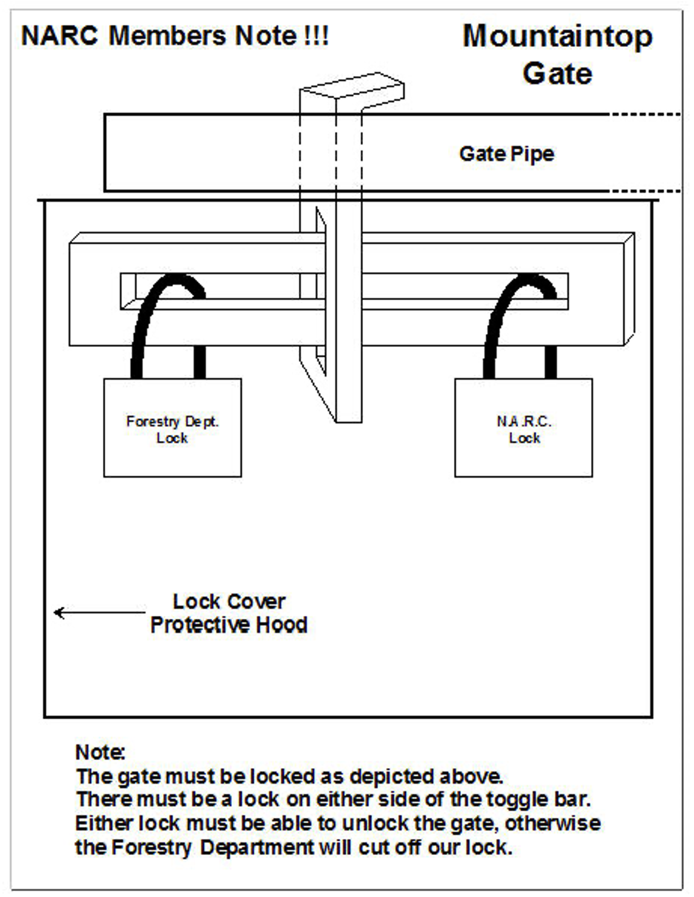
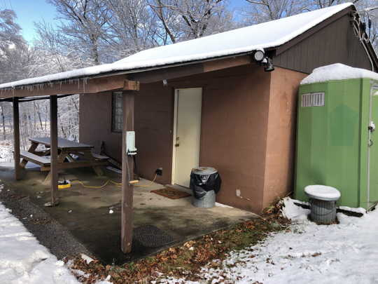

Logistics
Location
The station is located in the Rothrock State Forest. The club pays a nominal fee to rent the property. The location on top of a mountain means that our HF antennas have excellent take-off angles, especially to the north and north-northwest.
Keys
Members who wish to access the station must get two keys from W3TM. One key opens the padlock that secures the yellow access road gate. This key also opens the portable toilet. A second key opens the station door.
W3TM prefers to give new members an in-person tour of the station. So, please schedule that tour at your convenience. You’ll receive your keys during the tour.
Arrival procedures
Here is the sequence we prefer all members use when accessing the mountaintop station.
- Unlock the yellow gate. Use the small key to unlock the padlock. The larger key opens the clubhouse itself. Take the padlock and locking bolt with you to the shack.

Close the gate and replace the lock bar, but do not re-lock the gate.
If you know that others will be joining you soon, you may leave the gate open, but make sure to park cross-wise, blocking the past the shack. This ensures that no other driver can inadvertently drive past you and get locked behind the gate when you leave.

- Unlock door of the shack using the larger of the two keys. There is one lock above the door handle. Turn the key to the left (counterclockwise) to unlock the door.
- There are light switches on the left just inside the door.
- Put the padlock and locking bar on the desk near the door.
- Turn up the heat, if needed.
- Go to the breaker box near the southeast corner of the shack (on your right as you enter the shack). By default, we leave breakers 7-14 – the baseboard and north wall 240 V heaters – off, and the remainder on. There is a label on the breaker panel to remind you.
- Turn breakers 7-14 on by pushing the breaker lever to the left to align with the others.
- The porta potty key is on a hook to the right of the door. Note: The small key that opens the State Forest gate also opens the porta potty.
- The toilet is serviced periodically. If it needs to be serviced, please let Rick W3TM know. The porta potty is on the South side of the shack.
- Please text W3TM (814-777-3298), Eric W3EDP (814-867-3393), or Mike N3LI (814-404-3991) when you leave. Please report any issues that need to be addressed.